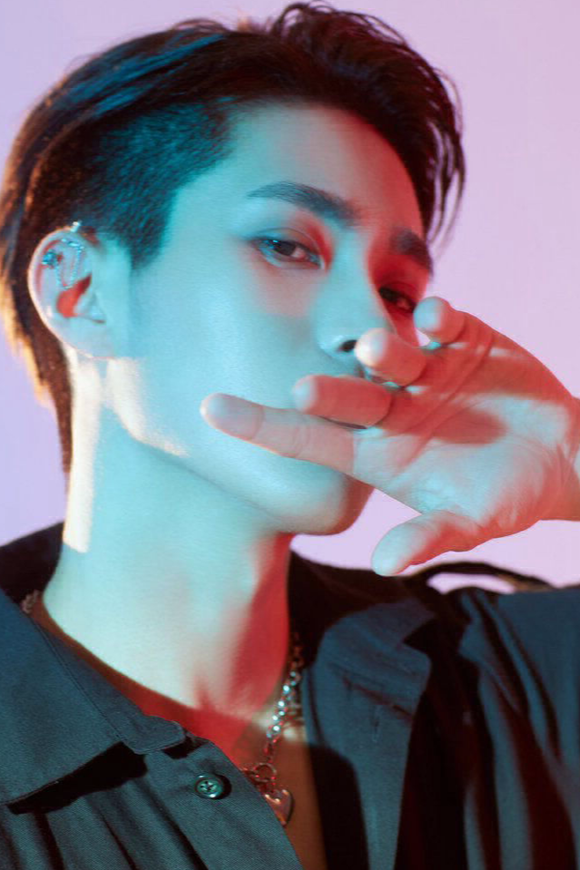
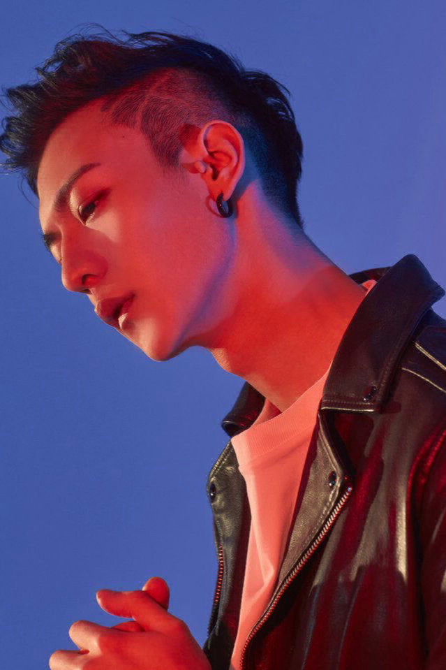

• Yue Yue nasceu no dia 11 de Julho de 1992 em Pequim, China. Yue Yue tirou o curso de engeharia na Escócia na Universidade de Glasgow e sabe falar inglês. Ele é o líder do grupo e o mais velho, ele mede 183cm e pesa 65kg.

MU ZIYANG / KWIN
• Mu Ziyang nasceu no dia 21 de April de 1994 em Shandong, China. Ziyang antes de querer ser um ídolo ele foi um modelo e formou-se em moda no instituto de Pequim (Beijing Institute of Fashion Technology). Ele é o segundo mais alto do grupo com 188cm e pesa 68kg.
BUFAN / KATTO
• Bufan nasceu no dia 13 de April de 1996 em Shandong, China. Bufan antes de querer ser um ídolo ele foi um modelo e formou-se em moda no instituto de Pequim (Beijing Institute of Fashion Technology). Ele é o mais alto do grupo com 192cm e pesa 83kg.

LINGCHAO / DIDI
• Lingchao nasceu no dia 9 de Janeiro de 2001 em Hebei, China. Ele é o mais novo do grupo daí o nickname dele ser didi (significa o mais novo em madarim). Ele sabe tocar bateria e gosta de cantar. Ele med 182cm e pesa 56kg.